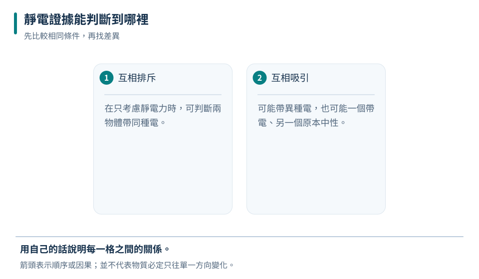
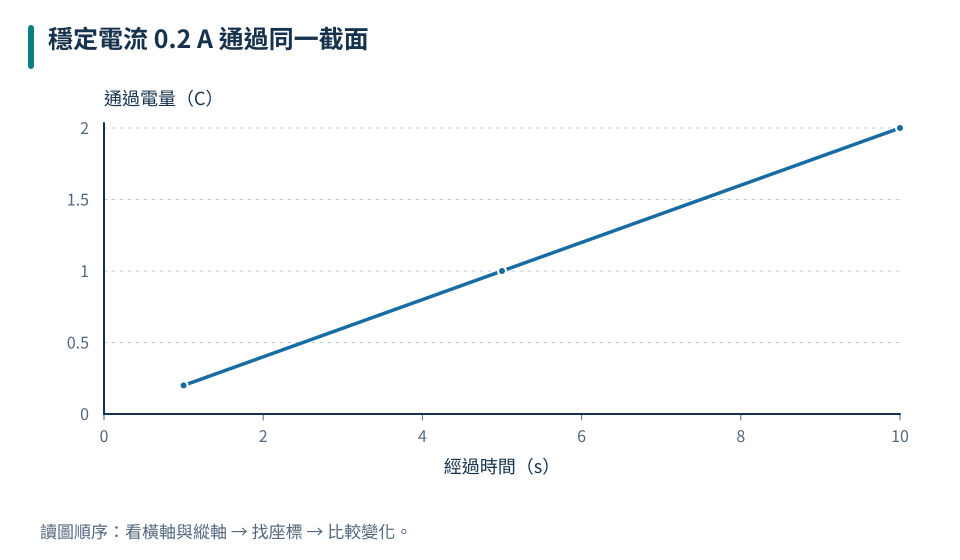
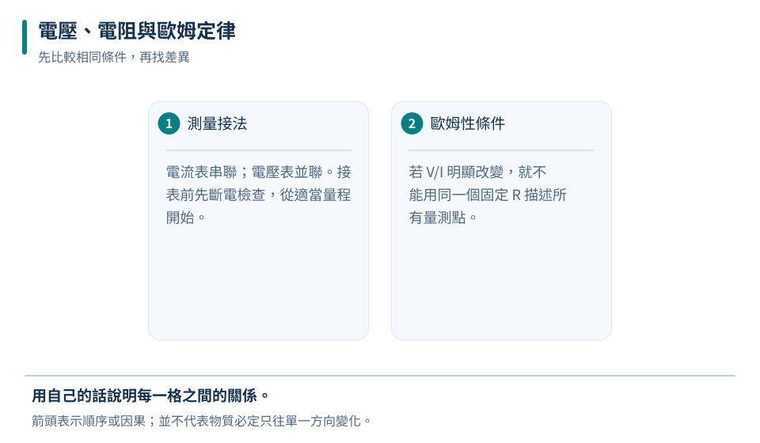
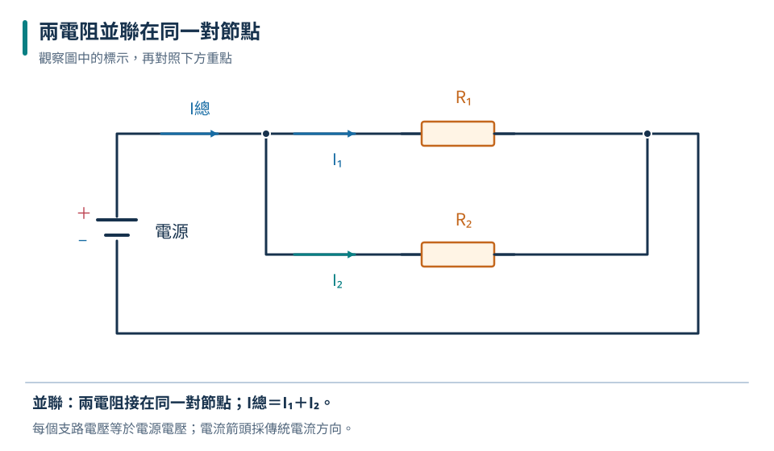

電荷守恆
摩擦轉移電荷，並不是創造正負電荷粒子。
九上 · 理化 · 第 4 章
毛衣脫下時的劈啪聲與手電筒發光都和電荷有關，但電荷停留和持續流動是不同情形。本章從靜電出發，建立電流、電壓、電阻的觀念，再用量測數據與串並聯規則，讀懂電路圖，找出電路中各處的關係。
先備概念：知道原子包含帶電粒子、會做比例與簡單代數運算、知道能量可轉換與傳遞
LEARN & EXPLAIN
電荷有正、負兩種，同種相斥、異種相吸。中性物體含有正負電荷，只是總量互相抵消；不是完全沒有電荷。日常摩擦起電通常是電子在兩個物體間轉移，失去電子的一方帶正電，得到電子的一方帶負電，整體電荷量守恆。
導體內的電荷較容易移動，絕緣體則不容易。帶電物體靠近中性物體，可能使其中正負電荷重新分布或產生極化，近端的吸引作用可使中性物被吸住。因此看到吸引，不能直接認定兩物體帶異種電；若排除其他作用而看到靜電排斥，才可判斷兩者帶同種電。
摩擦轉移電荷，並不是創造正負電荷粒子。
異種電荷相吸；帶電物也能吸引因極化而受影響的中性物。

判斷必須符合證據強度，不能把「吸引」當成異種帶電的唯一證明。
不能；被吸引不代表紙屑原先帶正電。
中性不是沒有電荷，而是正負電荷的總量抵消。
LEARN & EXPLAIN
電流是電荷的有序移動，電流大小 I＝通過截面的電量 Q／時間 t，1 A＝1 C/s。傳統電流方向定為正電荷移動方向；金屬導線實際主要由電子移動，方向與傳統電流相反。在電池外部，傳統電流沿完整回路由正極經用電器流向負極。
要維持電流，通常需要提供能量的電源及閉合導電路徑。串接在單一路徑中的各處穩定電流相同，用電器轉移能量而不會把電荷逐一用掉。電流表內阻很小，應串聯接入待測支路並選合適量程；直接跨接電源可能形成近似短路。
斷路沒有完整通路，穩態下不會有持續電流。
電荷在電路中流動，電池提供的能量由用電器轉換。
| 經過時間（s） | 通過電量（C） |
|---|---|
| 1 | 0.2 |
| 5 | 1 |
| 10 | 2 |

I＝Q/t；相同電流下，累積通過的電量與時間成正比。
平均電流為 0.25 A。
燈泡消耗的是電能，不是電流；穩定單一路徑中，進出燈泡的電流相等。
LEARN & EXPLAIN
電壓是兩點間的電位差，與每單位電量能轉移多少能量有關，單位伏特（V）。電壓要比較兩點，電壓表需並聯在待測元件兩端；理想電壓表電阻極大，因此不明顯改變原電路的電流。電源電壓是推動電荷並提供能量的條件，不能與電流視為同一個量。
電阻描述元件對電流的阻礙，R＝V／I，單位歐姆（Ω）。對溫度等條件保持穩定的歐姆性電阻，V＝IR，電壓與電流成正比。同材質同粗細的導線越長，電阻越大；同材質同長度的導線越粗，電阻越小。燈絲升溫時電阻會改變，不能把所有元件都當成固定電阻。
電流表串聯；電壓表並聯。接表前先斷電檢查，從適當量程開始。
若 V/I 明顯改變，就不能用同一個固定 R 描述所有量測點。
| 兩端電壓（V） | 通過電流（A） | V/I（Ω） |
|---|---|---|
| 2 | 0.1 | 20 |
| 4 | 0.2 | 20 |
| 6 | 0.3 | 20 |

電壓加倍、電流加倍，三次的比值都為 20 Ω。
電流為 0.3 A。
電壓為零不一定表示電阻為零；應先確認元件、電源及量測兩點。
LEARN & EXPLAIN
串聯電路只有一條電流路徑，各電阻的電流相同，總電壓等於各元件電壓和，等效電阻為各電阻相加。串聯的某處斷開，就切斷整條回路；在電源電壓固定時，增加串聯電阻會降低總電流。
並聯元件兩端分別接在相同的兩個節點，因此各支路電壓相同。分流處的總電流等於各支路電流和；電阻越小的支路，在相同電壓下電流越大。理想固定電壓電源下，新增一條並聯支路會增加總電流，但既有支路的電壓及固定電阻電流不變。
電流相同、電壓分配；R總＝R₁＋R₂。
電壓相同、電流分流；總電流是支路電流總和。

每個電阻都接在 A、B 兩節點間，兩端皆為 6 V。總電流＝1＋2＝3 A；中央支路含電源，不是裸線短路。
兩支路為 2 A、1 A，總電流 3 A。
元件在圖上畫得前後相接或上下排列，不能直接決定串並聯；要看實際連接的節點。
TRY, OBSERVE, EXPLAIN
REVIEW
摩擦轉移電荷，並不是創造正負電荷粒子。
回到這一節複習斷路沒有完整通路，穩態下不會有持續電流。
回到這一節複習電流表串聯；電壓表並聯。接表前先斷電檢查，從適當量程開始。
回到這一節複習電流相同、電壓分配；R總＝R₁＋R₂。
回到這一節複習CHAPTER TEST
先獨立作答，再看解析。中難與難為編者估計，尚未經學生實測校準。